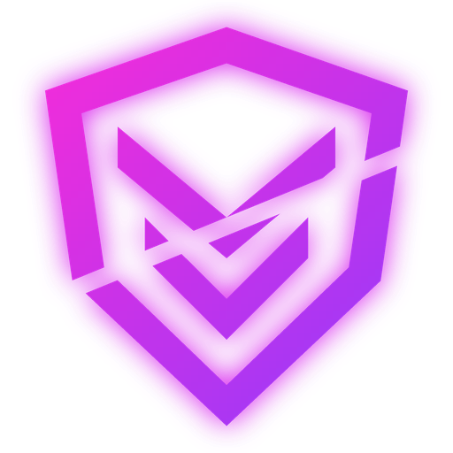
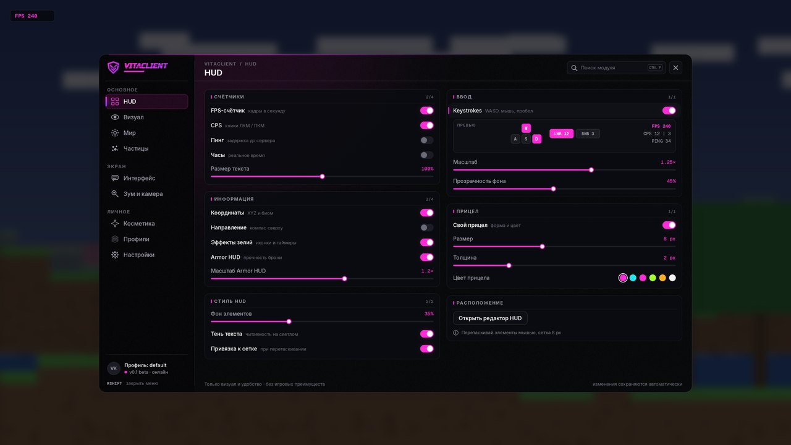
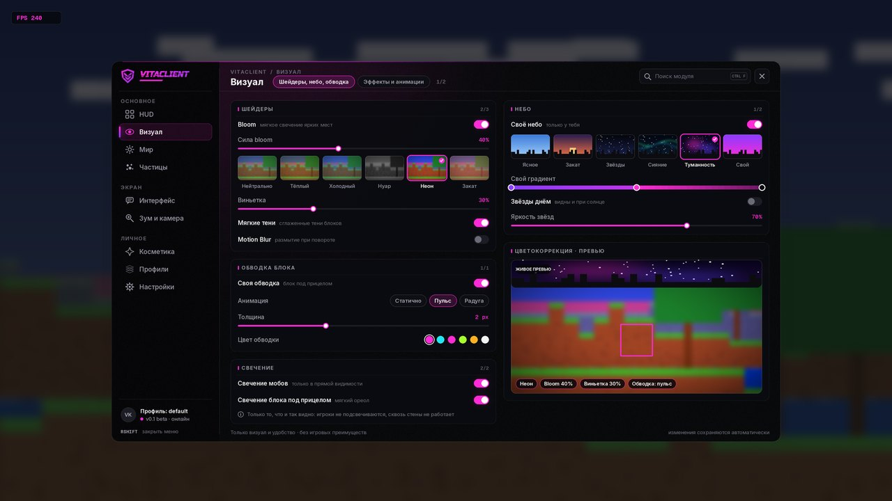

Меню на Right Shift
Все модули и настройки в одном окне: включай, двигай, настраивай.
Fabric · 1.16.5
Визуальный клиент для Minecraft. Чистый HUD, зум, свой прицел и плавные анимации. Только визуал, без чит-функций.
100 ₽, ключ активации после покупки. Меню открывается на Right Shift.

Клиент меняет только картинку: игровую механику он не трогает.
Все модули и настройки в одном окне: включай, двигай, настраивай.
FPS, координаты, кейстроки с CPS, броня с прочностью. Расположение настраивается в редакторе HUD из меню.
Свой прицел: форма, размер, цвет и обводка.
Настройка частиц ударов и эффектов: больше, меньше или свой цвет.
Ник, здоровье и броня цели, которую ты бьёшь или на которую смотришь.
Плавные анимации руки, взмаха и интерфейса.
Приближение на клавишу, как подзорная труба. Кратность и плавность настраиваются в меню.
После покупки получаешь ключ и вводишь его в клиенте.
Совместимость с шейдерами через Iris.
Пока это макеты меню. Скрины из игры добавим позже.


Скопируй адрес и добавь его в список серверов в Minecraft.
45.93.200.27:25566
Клиент меняет только картинку у тебя на экране. Это мод для Fabric: он не просит логин и пароль от аккаунта и ничего не меняет в твоём Minecraft, кроме своих настроек.
VitaClient — мод для Fabric. Поставь Minecraft 1.16.5 с Fabric Loader, положи файл VitaClient в папку mods и запусти игру. Подробная инструкция придёт вместе с ключом.
Свой лаунчер, который всё поставит сам, сделаем позже.
Да, нужен свой Minecraft: Java Edition.
Minecraft 1.16.5 на Fabric. Новые версии добавим позже.
Нет. Только визуал, без чит-функций: ни ESP, ни X-ray, ни хитбоксов, ни автокликера, ни киллауры.
Да, 100 ₽, покупка через FunPay, ключ активации.
Нажми Right Shift в игре.